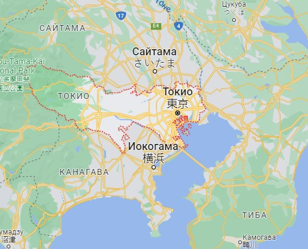
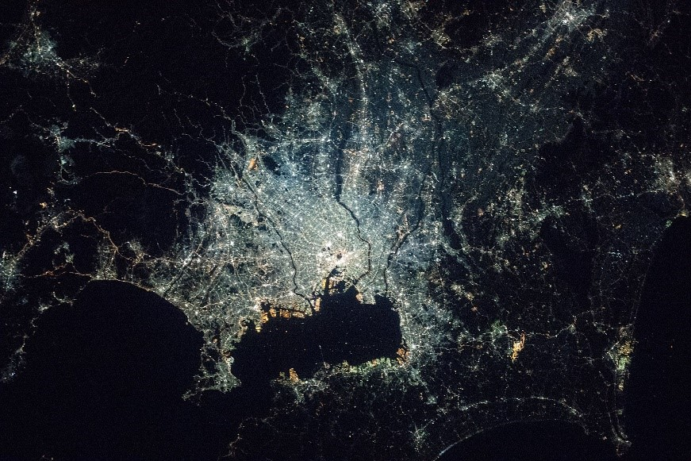
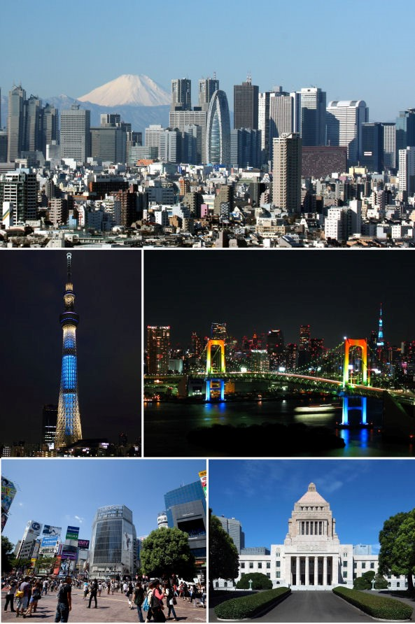

Путеводитель по городу Токио
Токио («Восточная столица») — столица Японии, её административный, финансовый, культурный и промышленный центр. Расположен в юго-восточной части острова Хонсю, на равнине Канто в бухте Токийского залива Тихого океана. Площадь — 2 187 км². по оценкам, в Токио живут 14 млн человек, из них подавляющее большинство живут в 23 специальных районах. В дневное время население увеличивается более чем на 2,5 млн работников и студентов, приезжающих из соседних областей.
Карта города:
Вид со спутника:
Город был основан в 1457 году как замок Эдо. В 1590 году им завладел Токугава Иэясу, основатель клана сёгунов Токугава. Таким образом, Эдо стал столицей сёгуната, имперской столицей же оставался Киото. В 1615 году армии Иэясу уничтожили своих противников — клан Тоётоми, получив тем самым, абсолютную власть на протяжении около 250 лет. Иэясу создал долговременные институты управления. Город быстро рос и к XVIII веку стал одним из крупнейших городов мира. В результате реставрации Мэйдзи в 1868 году произошло свержение сёгуната и восстановление императорской власти. В 1868 году Император Муцухито перенёс столицу в Эдо, переименовав его в Токио.
Фотогалерея:
Достопримечательности: